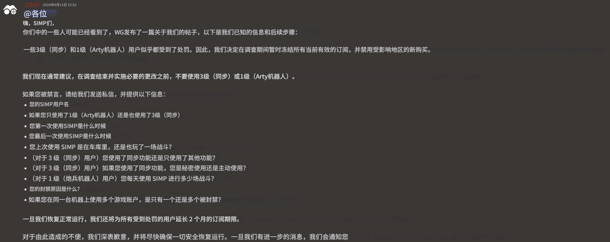

【SYNC】SIMP同步器 封禁事件详情
2024年9月13日，WG官方针对坦克世界直营服（EU欧服/NA美服/ASIA亚服）发起大规模账号封禁行动，本次封禁的核心打击对象为SIMP同步器（SYNC）的使用者。
由于WG已正式检测并确认SIMP同步器的运行特征与使用痕迹，在直营服范围内，累计逾千名使用该工具的玩家遭到账号处罚，受影响规模达到了空前的程度。
受此次官方封禁事件的直接影响，SIMP同步器官方宣布立即停止全部服务、永久下架产品；与此同时，连带使用SIMP Arty(艺术/火炮机器人)功能的用户也被一并检测、封禁，该处罚机制无差别触发，无豁免情况。
下方为SIMP官方发布的紧急停服、封禁善后、订阅冻结与申诉公告原文截图：
SIMP官方英文紧急公告（2024-09-13）

SIMP官方公告中文翻译对照
